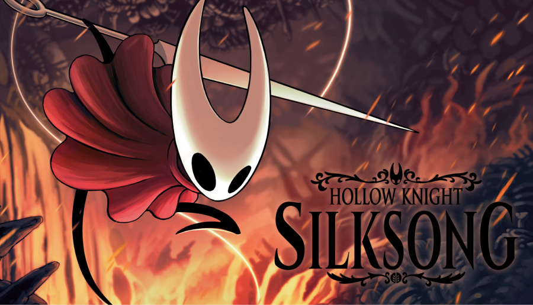
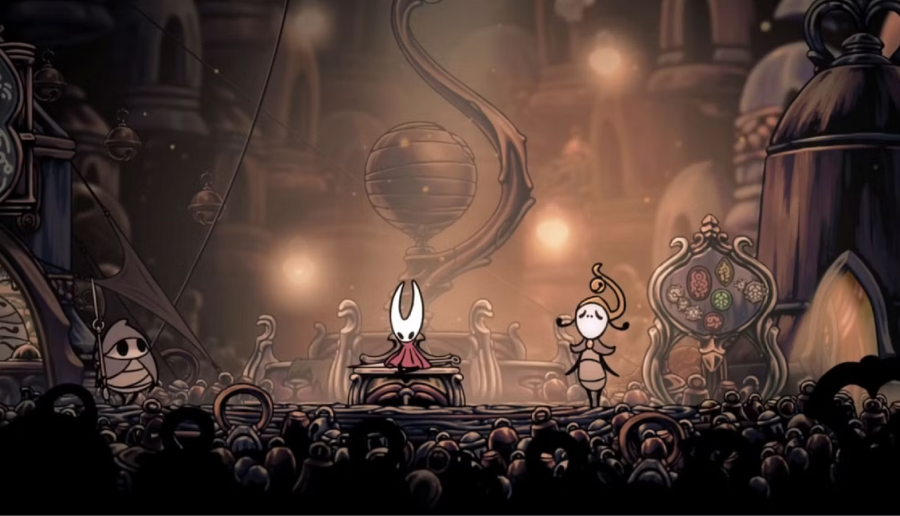
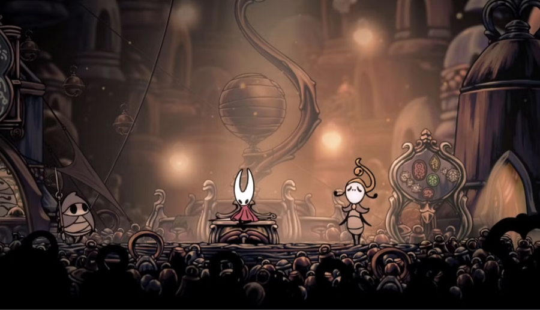
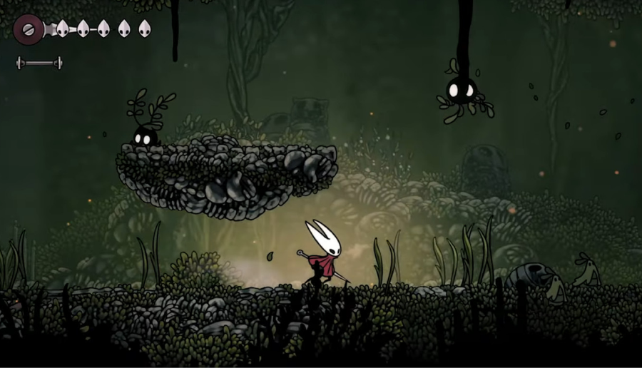

As young gamers, we're always on the lookout for unique and thrilling indie games that push the boundaries of
what's possible in the gaming world. And one game that has been generating buzz among the gaming community is
Silksong, the eagerly awaited sequel to the critically acclaimed game, Hollow Knight, developed by Team Cherry.
After the recent E3 update, we can't contain our excitement about the new systems that have been revealed for
Silksong, and we can't wait to share all the thrilling details with you!

One of the most intriguing new features in Silksong is the way defeat is handled. In Hollow Knight, the Knight
left a Shade upon defeat, but in Silksong, our new protagonist, Hornet, leaves behind a cocoon. This fragile
container holds a full stock of silk, which can be a game-changer for experienced players. Imagine strategically
utilizing the cocoon, breaking it open only when most needed, during a challenging boss fight or a tough
encounter, to gain that extra edge and turn the tables in your favor. It adds a whole new layer of strategy and
decision-making to the gameplay, making it even more exciting and dynamic.
Another exciting system introduced in Silksong is the expanded moveset of Hornet. As players progress through the
game, Hornet gains new abilities and acquires different weapons, such as a needle and thread. These unique tools
can be used not only for combat but also for traversal, opening up new possibilities for exploration and
puzzle-solving. The combination of Hornet's agility, speed, and arsenal of tools make for a thrilling and dynamic
gameplay experience that will keep young gamers on their toes, eager to uncover all the secrets that Silksong has
to offer.
 


Furthermore, Silksong promises a rich and diverse world to explore. Players will journey through stunning
environments filled with intricate details, breathtaking hand-drawn art, and atmospheric soundscapes. From ancient
ruins to lush forests, players will encounter a wide variety of fascinating creatures, formidable bosses, and
intriguing NPCs, each with their own stories to uncover. The world of Silksong is designed to be immersive and
captivating, drawing players into its mysteries and secrets, and keeping them hooked for hours on end.
But it's not just the gameplay and visuals that make Silksong an exciting prospect for young gamers. It's also the
story and characters that add depth and emotional resonance to the game. As players progress through the game,
they will uncover the lore and unravel the mysteries of Hornet's journey, discovering her motivations, struggles,
and relationships. The game promises to deliver a compelling narrative that will tug at the heartstrings of
players, immersing them in a world that is both fantastical and deeply human.

What's more, Silksong is a testament to the power of indie game development. Team Cherry, a small indie studio,
has poured their heart and soul into creating a game that pushes the boundaries of what's possible in a video
game. The dedication, creativity, and innovation of indie developers are on full display in Silksong, showcasing
the incredible talent and passion that exists within the indie gaming community. It's a game that inspires young
gamers to pursue their own creative dreams and appreciate the unique experiences that indie games have to offer.
In conclusion, Silksong is shaping up to be an indie game that will undoubtedly captivate and thrill young gamers
who are passionate about indie games. With its innovative systems, expanded moveset, immersive world, compelling
story, and stunning visuals, Silksong promises to deliver an unforgettable gaming experience that will leave
players eagerly anticipating its release. Team Cherry has once again raised the bar for indie game development,
and has set the stage for Silksong to become a must-play game for young gamers who are looking for fresh and
exciting experiences in the indie gaming world. So, get ready to embark on a thrilling adventure with Hornet,
explore a beautifully crafted world, uncover secrets, and engage in intense battles with formidable foes. Silksong
is undoubtedly a game that will capture the hearts and minds of young gamers, and we can't wait to see what Team
Cherry has in store for us when the game finally releases. Get ready to be swept away into the enchanting world of
Silksong, where the magic of indie game development comes to life in all its glory!